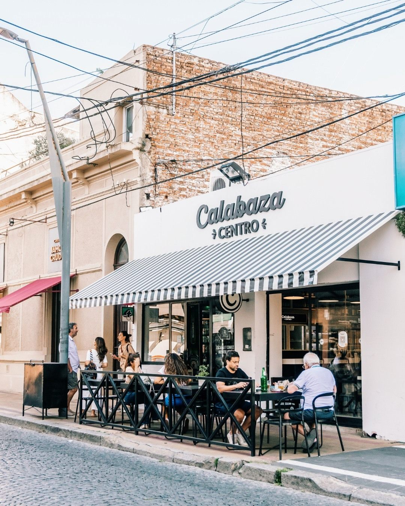
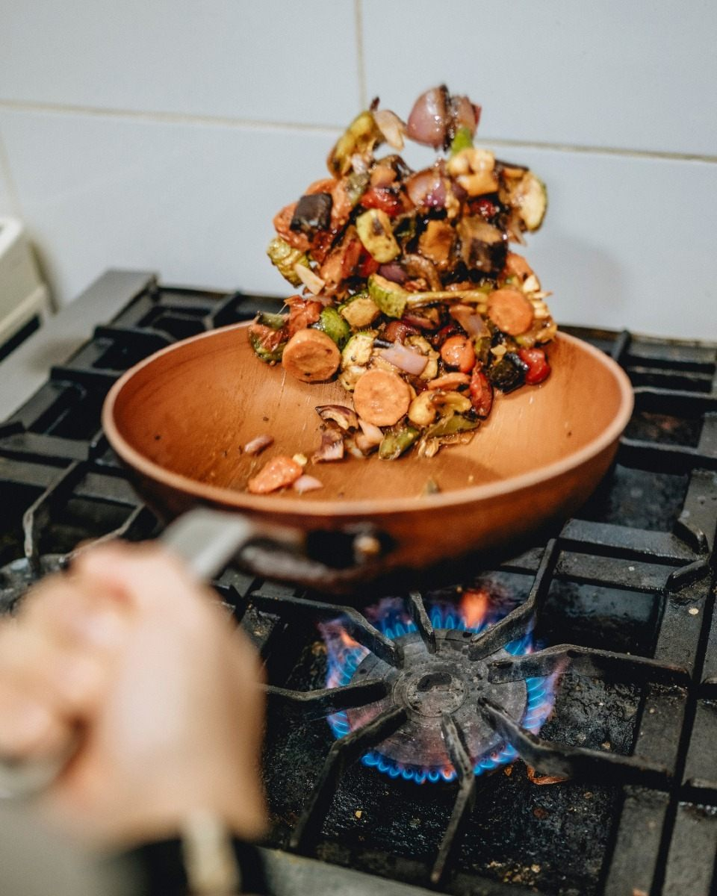
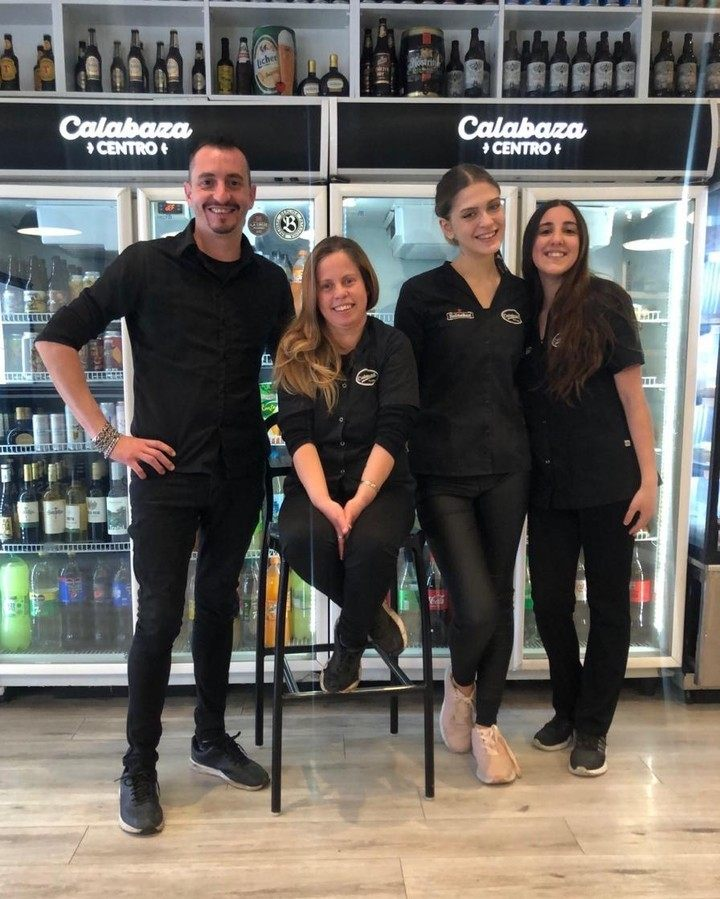
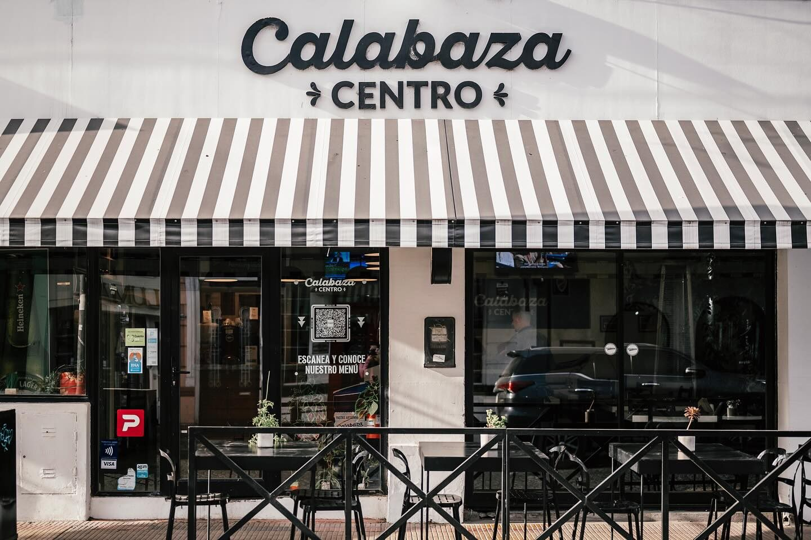
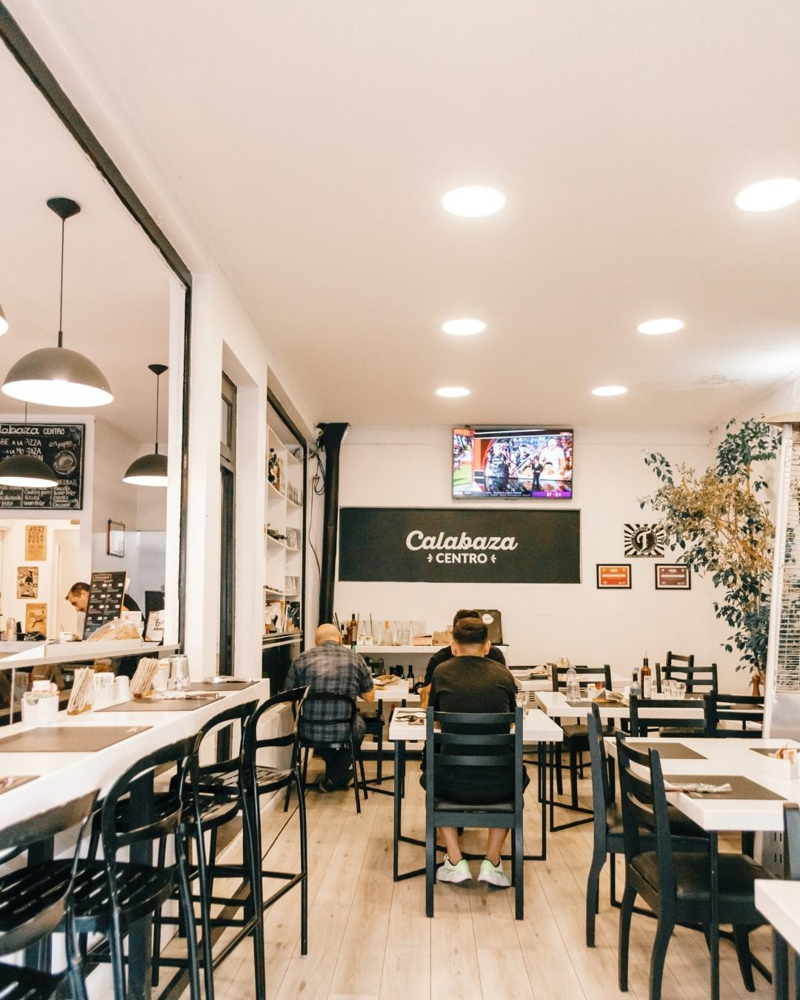
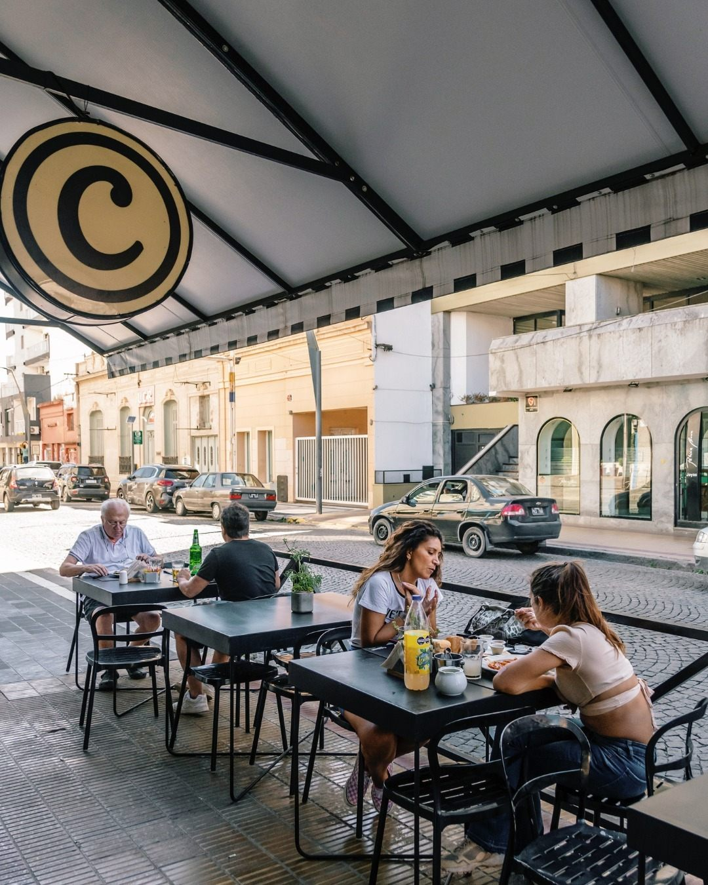

01 / BELGRANO
Calabaza
Belgrano.
Belgrano 1301 · Tandil
Restaurante · Delivery · Take away · PedidosYa
- Horario
- Lunes a sábados · 10:00 a 00:00
- 2494 250786

Calabaza · Dos locales en Tandil
Comida casera que no falla. Restaurante, take away y delivery en Belgrano y Centro.
La carta está en revisión. Podés consultar tu selección por WhatsApp; platos y precios son de muestra.
01 / Nuestros locales
Elegí la sucursal para ver sus datos y preparar tu consulta por WhatsApp.
Belgrano 1301 · Tandil
Restaurante · Delivery · Take away · PedidosYa
Mitre 587 · Tandil
Restaurante · Take away · Delivery · PedidosYa
La carta y los precios aún son de muestra. Cada local confirma disponibilidad y condiciones antes de tomar el pedido.
02 / Nuestra historia
Calabaza vive en la conversación que se arma alrededor de la comida: quienes cocinan, quienes atienden y quienes vuelven a encontrarse.
En Belgrano y en Centro, podés sentarte a comer o elegir algo para llevar. El relato final de la marca se revisará con el equipo.
Conocer el lugar03 / De la cocina
Una mirada a la cocina de Calabaza. Los platos destacados se incorporarán cuando se confirmen nombres, fotos y disponibilidad por sucursal.

Una carta pensada para leer fácil desde el celular, elegir y revisar antes de consultar.
Explorar la carta Versión de muestra: productos y precios pendientes de aprobación.
04 / Las personas
La cocina y el salón toman forma con las personas que los hacen posibles. Esta foto del equipo de Centro acerca esa parte cotidiana de Calabaza.
Foto: sucursal Centro. Historia y nombres del equipo pendientes de revisión.
05 / El libro
Emilio Juan Pardo, vinculado a Calabaza, es autor de un libro sobre cocina, historias y cultura tandilense. Una invitación a mirar lo que sucede alrededor de los sabores de la ciudad.
Conocer el libroPresentación tipográfica provisional hasta recibir la tapa oficial.
06 / El lugar
Postales de la sucursal Centro. Las imágenes de Belgrano se sumarán cuando estén disponibles.


